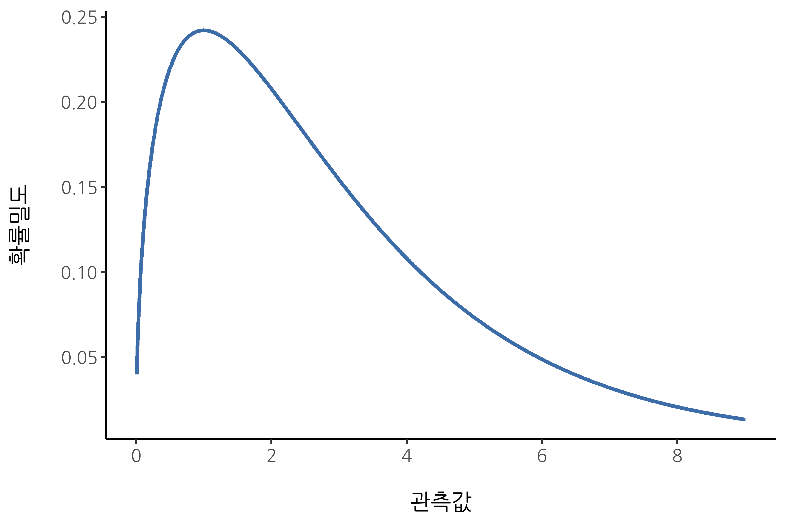

| number of flips | number of heads | proportion |
|---|---|---|
| 1 | 0 | 0.00 |
| 2 | 1 | 0.50 |
| 3 | 2 | 0.67 |
| 4 | 3 | 0.75 |
| 5 | 4 | 0.80 |
| 6 | 4 | 0.67 |
| 7 | 4 | 0.57 |
| 8 | 5 | 0.63 |
| 9 | 6 | 0.67 |
| 10 | 7 | 0.70 |
| 11 | 8 | 0.73 |
| 12 | 8 | 0.67 |
| 13 | 9 | 0.69 |
| 14 | 10 | 0.71 |
| 15 | 10 | 0.67 |
| 16 | 10 | 0.63 |
| 17 | 10 | 0.59 |
| 18 | 10 | 0.56 |
| 19 | 10 | 0.53 |
| 20 | 11 | 0.55 |
7 확률이란?
[신]은 우리에게 확률의 희미한 빛만을 허락하셨다.
– 존 로크
지금까지 이 책에서는 실험 설계의 몇 가지 핵심 개념을 다루었으며, 데이터 세트를 요약하는 방법에 대해 간략히 논의했습니다. 많은 사람들에게 이것이 통계의 전부처럼 보일 수도 있습니다. 즉, 숫자를 모으고, 평균을 계산하고, 그림을 그리고, 그것들을 보고서에 정리하는 것. 마치 우표를 수집하듯이 숫자를 다루는 것과 같습니다. 그러나 통계는 이보다 훨씬 더 광범위한 분야입니다. 사실, 기술 통계(descriptive statistics)는 통계학에서 가장 작은 부분 중 하나이며, 가장 강력하지도 않습니다. 통계의 더 크고 유용한 부분은 데이터를 통해 추론을 할 수 있도록 정보를 제공하는 것입니다.
통계를 이러한 관점에서 바라보기 시작하면, 즉 통계가 데이터를 통해 추론하는 데 도움을 준다고 생각하면, 그 예시를 어디에서나 찾을 수 있습니다. 예를 들어, Sydney Morning Herald (2010년 10월 30일자) 신문 기사에서 발췌한 짧은 문장을 보겠습니다:
“나는 어려운 일을 하고 있다,” 주 총리는 자신의 정부가 여론 조사 역사상 가장 인기 없는 노동당 정부로 나타났다는 조사 결과에 대해 이렇게 말했다. 이 조사에서는 노동당의 1차 선호도(primary vote)가 단 23%에 불과한 것으로 나타났다.
이러한 발언은 신문이나 일상생활에서 전혀 놀랍지 않지만, 이 발언이 포함하는 내용을 생각해 봅시다. 한 여론 조사 기관이 조사를 실시했는데, 일반적으로 이러한 조사는 예산이 허락하는 한 대규모로 진행됩니다. 원본 조사를 찾아보는 것이 번거로우므로, 가정해 보겠습니다. 예를 들어, 이 기관이 무작위로 1000명의 뉴사우스웨일스(NSW) 유권자에게 전화를 걸었고, 그중 230명(23%)이 호주 노동당(ALP)에 투표할 의사가 있다고 답했다고 가정해 봅시다. 2010년 연방 선거 당시, 호주 선거위원회는 NSW에서 4,610,795명의 등록 유권자가 있다고 보고했습니다. 따라서 나머지 4,609,795명(약 99.98%의 유권자)의 의견은 우리에게 알려지지 않았습니다. 설령 응답자들이 거짓말을 하지 않았다고 가정하더라도, 우리가 100% 확신할 수 있는 유일한 사실은 실제 ALP의 1차 선호도가 최소 230/4,610,795(약 0.005%)에서 최대 4,610,025/4,610,795(약 99.83%) 사이라는 것입니다. 그렇다면 여론 조사 기관, 신문, 독자들이 ALP의 1차 선호도가 약 23%라고 결론 내리는 것은 어떤 근거에서 정당화될 수 있을까요?
이 질문의 답은 상당히 명확합니다. 만약 내가 무작위로 1000명에게 전화를 걸었고, 그중 230명이 ALP에 투표할 의사가 있다고 말했다면, 전체 유권자 중 ALP에 투표할 의사가 있는 사람이 이 230명뿐이라는 것은 매우 가능성이 낮아 보입니다. 다시 말해, 우리는 여론 조사 기관이 수집한 데이터가 전체 유권자를 대표한다고 가정합니다. 하지만 얼마나 대표성이 있을까요? 실제 ALP의 1차 선호도가 24%라고 밝혀진다면 놀라운 일일까요? 29%? 37%? 이쯤 되면 우리의 직관이 다소 흔들리기 시작합니다. 24%라면 아무도 놀라지 않을 것이고, 37%라면 모두가 놀랄 것입니다. 하지만 29%는 과연 믿을 만한 수치일까요? 단순히 숫자를 보고 추측하는 것만으로는 이러한 질문에 답하기 어렵습니다.
추론 통계학(Inferential statistics)은 이러한 질문에 답하는 데 필요한 도구를 제공합니다. 그리고 이러한 질문들은 과학적 연구의 핵심을 이루기 때문에, 통계학과 연구 방법론을 다루는 모든 입문 과정에서 상당한 비중을 차지합니다. 그러나 통계적 추론 이론은 확률 이론(probability theory)을 기반으로 구축되어 있습니다. 따라서 이제 확률 이론을 살펴보도록 하겠습니다. 이 장에서 다루는 확률 이론은 기본적인 배경 지식에 해당합니다. 이 장에서는 통계학 자체는 많이 다루지 않습니다. 이 책의 다른 장들만큼 깊이 이해할 필요는 없습니다. 그럼에도 불구하고 확률 이론은 통계학의 근간을 이루므로, 기본적인 내용을 다루는 것은 의미가 있습니다.
7.1 확률과 통계는 어떻게 다른가?
확률 이론을 논의하기 전에, 확률과 통계의 관계에 대해 잠시 생각해 보는 것이 도움이 됩니다. 이 두 학문은 밀접하게 관련되어 있지만 동일하지는 않습니다. 확률 이론은 “가능성의 원리”입니다. 이는 다양한 유형의 사건이 얼마나 자주 발생할지를 알려주는 수학의 한 분야입니다. 예를 들어, 다음과 같은 질문들은 확률 이론을 사용하여 답할 수 있습니다:
- 공정한 동전을 10번 던졌을 때 모두 앞면이 나올 확률은 얼마인가?
- 6면 주사위를 두 번 굴렸을 때 두 번 모두 6이 나올 확률은 얼마인가?
- 완벽하게 섞인 카드 데크에서 다섯 장을 뽑았을 때 모두 하트일 확률은 얼마인가?
- 내가 복권에 당첨될 확률은 얼마인가?
이 질문들은 모두 공통점을 가지고 있습니다. 각각의 경우에서 “세상에 대한 진실”은 이미 알려져 있으며, 질문은 그런 기지의 세상에서 “어떤 유형의 사건”이 발생할지에 대한 것입니다. 첫 번째 질문에서는 동전이 공정하다는 것을 알고 있으며, 따라서 개별 동전 던지기에서 앞면이 나올 확률이 50%라는 것도 압니다. 두 번째 질문에서는 주사위를 한 번 던졌을 때 6이 나올 확률이 1/6이라는 것을 알고 있습니다. 세 번째 질문에서는 카드 데크가 제대로 섞였다는 것을 알고 있습니다. 네 번째 질문에서는 복권이 특정한 규칙을 따른다는 것을 알고 있습니다. 요점은 확률론적 질문은 이미 알려진 모형에서 출발하며, 우리는 그 모형을 사용하여 계산을 수행한다는 것입니다. 이러한 모형은 매우 단순할 수도 있습니다. 예를 들어, 동전 던지기 예제에서는 다음과 같이 모형을 정의할 수 있습니다: \[P(head)=0.5\]
이를 “앞면이 나올 확률은 0.5이다”라고 읽을 수 있습니다. 나중에 보겠지만, 백분율이 0%에서 100% 사이의 숫자인 것처럼, 확률도 0에서 1 사이의 숫자로 표현됩니다. 이 확률 모형을 사용하여 첫 번째 질문에 답할 때, 실제로는 어떤 일이 일어날지 정확히 알지는 못합니다. 질문에서처럼 10번 연속으로 앞면이 나올 수도 있습니다. 하지만 세 번만 앞면이 나올 수도 있습니다. 이것이 핵심입니다. 확률 이론에서는 모형이 이미 알려져 있지만, 데이터는 알려져 있지 않습니다.
그렇다면 확률은 그렇다 치고, 통계는 무엇일까요? 통계적 질문은 반대 방향으로 작동합니다. 통계에서는 우리가 세상의 진실을 알지 못합니다. 우리가 가진 것은 오직 데이터뿐이며, 우리는 이 데이터를 통해 미지의 세상에 대한 진실을 알아내고자 합니다. 통계적 질문은 다음과 같은 형태를 띱니다:
- 내 친구가 동전을 10번 던졌는데 모두 앞면이 나왔다면, 내 친구는 나를 속이고 있는 걸까?
- 카드 데크에서 맨 위 다섯 장의 카드가 모두 하트라면, 데크가 제대로 섞였을 확률은 얼마인가?
- 복권 위원장의 배우자가 복권에 당첨되었다면, 복권이 조작되었을 가능성은 얼마인가?
이번에는 우리가 가진 것은 오직 데이터뿐입니다. 내가 아는 것은 친구가 동전을 10번 던졌고, 그 결과가 모두 앞면이었다는 것입니다. 그리고 내가 알고 싶은 것은 실제로 공정한 동전인데 10번 연속 앞면이 나온 것인지, 아니면 내 친구가 나를 속이고 있는 것인지에 대한 것입니다. 내가 가진 데이터는 다음과 같습니다:
H H H H H H H H H H H
그리고 내가 하려는 것은 어떤 “세상에 대한 모형”을 신뢰해야 하는지를 결정하는 것입니다. 만약 동전이 공정하다면, 내가 채택해야 할 모형은 앞면이 나올 확률이 0.5라는 것입니다, 즉 \(P(heads) = 0.5\)입니다. 만약 동전이 공정하지 않다면, 앞면이 나올 확률이 0.5가 아니라고 결론을 내려야 합니다. 이를 수식으로 표현하면 \(P(heads)\ne{0.5}\)가 됩니다. 즉, 통계적 추론의 문제는 어떤 확률 모형이 맞는지를 알아내는 것입니다. 분명히, 통계적 질문은 확률적 질문과 동일하지 않지만, 둘은 깊이 연결되어 있습니다. 이러한 이유로, 좋은 통계 이론 입문서는 확률이 무엇이며, 그것이 어떻게 작동하는지를 설명하는 것부터 시작해야 합니다.
7.2 확률이란 무엇을 의미하는가?
먼저 이 질문부터 시작해 보겠습니다. “확률”이란 무엇일까요? 놀랍게도, 통계학자와 수학자들은 확률의 규칙에 대해서는 (대체로) 동의하지만, 이 단어의 의미에 대해서는 그다지 합의가 이루어지지 않았습니다. 이는 다소 이상하게 느껴질 수도 있습니다. 우리는 “기회”, “가능성”, “있을 법한”, “확률적”이라는 단어를 편하게 사용하며, 그 의미를 이해하는 것이 어렵지 않다고 생각합니다. 하지만 실제로 이런 개념이 무엇인지 정의하려다 보면, 대화가 끝난 후에도 완전히 이해하지 못한 것 같은 기분이 들 수 있습니다. 그리고 이는 많은 일상 개념과 마찬가지로, 우리는 그것이 무엇인지 정확히 파악하고 있지 못한 것일 수 있습니다.
그럼, 한번 시도해 보겠습니다. 두 로봇 축구팀, 아두이노 아스널과 C 밀란이 경기를 한다고 가정해 보겠습니다. 심사숙고 후에, 저는 아두이노 아스널이 이길 확률이 80%라고 결정했습니다. 그렇다면, 이것이 의미하는 바는 무엇일까요? 다음 세 가지 가능성이 있습니다:
- 이들은 로봇 팀이므로 여러 번 반복해서 경기를 시킬 수 있고, 그렇게 하면 아두이노 아스널이 평균적으로 10번 중 8번 이긴다.
- 특정 경기에서, C 밀란에 $1을 베팅하면 $5의 배당금을 받는 경우(즉, $1을 돌려받고 추가로 $4의 보상을 받는 경우), 또는 아두이노 아스널에 $4를 베팅하면 $1의 보상을 받는 경우(즉, $4를 돌려받고 추가로 $1을 받는 경우)에만 베팅이 “공정하다”고 판단된다.
- 아두이노 아스널의 승리에 대한 나의 주관적인 “신념” 또는 “확신”이 C 밀란의 승리에 대한 신념보다 네 배 더 강하다.
이 세 가지는 모두 그럴듯해 보입니다. 하지만 이들은 서로 동일하지 않으며, 모든 통계학자가 이를 전적으로 지지하는 것도 아닙니다. 그 이유는 서로 다른 통계적 이념(정말로 존재합니다!)이 있기 때문이며, 자신이 어떤 입장을 취하느냐에 따라 위 진술 중 일부가 무의미하거나 관련이 없다고 주장할 수도 있습니다. 이 절에서는 문헌에서 볼 수 있는 두 가지 주요 접근법을 간략히 소개하려 합니다. 이 두 가지가 유일한 접근법은 아니지만, 가장 대표적인 두 진영이라 할 수 있습니다.
7.2.1 빈도주의자 관점
확률에 대한 두 가지 주요 접근 방식 중 첫 번째이자 통계학에서 더 지배적인 접근 방식은 빈도주의자 관점(frequentist view)이며, 이는 확률을 장기적 빈도(long-run frequency)로 정의합니다. 공정한 동전을 반복해서 던진다고 가정해 봅시다. 정의에 따라, 이 동전은 \(P(H) = 0.5\)의 확률로 앞면이 나옵니다. 그렇다면 우리는 어떤 결과를 관찰할 수 있을까요? 첫 번째 20회의 동전 던지기가 다음과 같을 수도 있습니다.
T,H,H,H,H,T,T,H,H,H,H,T,H,H,T,T,T,T,T,H
단, T는 뒷면, H는 앞면. 이 경우 20번의 동전 던지기 중 11번(55%)이 앞면이 나왔습니다. 이제 제가 앞면이 나온 횟수(\(N_H\))를 기록하고, 매번 동전을 던질 때마다 앞면이 나온 비율 \(\frac{N_H}{N}\)을 계산했다고 가정해 봅시다. Table 7.1 은 그 결과를 보여줍니다(실제로 동전을 던져서 데이터를 수집했습니다!).
초반에는 앞면의 비율이 심하게 변동하는 것을 볼 수 있습니다. 처음에는 0.00에서 시작해 0.80까지 오르기도 합니다. 그러나 시간이 지나면서 점차 변동 폭이 줄어들고, 대부분의 값이 “올바른” 정답인 0.50에 가까워지는 것을 확인할 수 있습니다. 이것이 빈도주의자 확률 정의의 핵심입니다. 공정한 동전을 계속해서 던지면, \(N\)이 점점 커질수록(\(N \rightarrow \infty\)) 앞면이 나오는 비율이 50%에 수렴합니다. 수학자들이 신경 쓰는 미묘한 기술적 사항들이 있지만, 질적으로 볼 때 이것이 빈도주의자 확률의 정의입니다.
안타깝게도, 저는 무한한 개수의 동전을 가지고 있지도 않고, 무한히 동전을 던질 인내심도 없습니다. 하지만 컴퓨터는 이런 단순 반복 작업에 능숙합니다. 그래서 컴퓨터를 이용해 동전을 1000번 던지는 시뮬레이션을 수행하고, \(\frac{N_H}{N}\)이 \(N\)이 증가함에 따라 어떻게 변화하는지 시각화했습니다. 실제로 네 번 실행하여 결과가 우연이 아님을 확인했습니다. Figure 7.1 에서 그 결과를 볼 수 있습니다. 보시다시피, 관찰된 앞면의 비율은 결국 변동을 멈추고 안정됩니다. 그리고 최종적으로 수렴하는 값이 바로 앞면이 나올 실제 확률입니다.
빈도주의자 확률 정의는 몇 가지 바람직한 특성을 가지고 있습니다. 첫째, 객관적입니다. 즉, 사건의 확률은 반드시 현실 세계에 근거해야 합니다. 확률 명제가 의미를 가지려면 (일련의) 실제 세계에서 발생하는 사건을 참조해야 하며, 해당 사건들의 상대적 빈도를 고려해야 합니다.1 둘째, 명확합니다. 동일한 연속적 사건을 관찰하고 확률을 계산하는 모든 사람들은 필연적으로 동일한 결과를 도출해야 합니다.
그러나 빈도주의자 접근법에는 단점도 있습니다. 가장 큰 문제는 무한한 연속적 사건이 실제 세계에 존재하지 않는다는 것입니다. 예를 들어, 주머니에서 동전을 꺼내 던진다고 가정해 봅시다. 동전이 바닥에 닿을 때마다 표면이 마모되며, 결국 동전은 닳아서 사용할 수 없게 됩니다. 따라서 “무한한 동전 던지기”라는 개념이 의미가 있는지, 혹은 객관적인지에 대해 의문을 가질 수 있습니다. 또한, 빈도주의자 정의는 적용 범위가 제한적입니다. 일상적인 언어에서 사람들이 확률을 언급하는 많은 경우가 빈도주의자 정의에 의해 설명될 수 없습니다.
예를 들어, 기상학자가 TV에 나와서 “2048년 11월 2일 애들레이드에서 비가 올 확률은 60%입니다”라고 말한다고 가정해 봅시다. 우리는 이 말을 자연스럽게 받아들이지만, 빈도주의자 관점에서 이를 정의하는 것은 쉽지 않습니다. 애들레이드는 하나뿐이고, 2048년 11월 2일도 한 번뿐입니다. 즉, 빈도주의적으로 정의할 수 있는 무한한 사건의 연속이 존재하지 않습니다.

빈도주의자 확률 개념은 단일 사건(single event)에 대한 확률 진술을 금지합니다. 빈도주의자 관점에서 보면, 내일 비가 올 수도 있고, 안 올 수도 있습니다. 단일하고 반복 불가능한 사건에 확률이 부여될 수 없습니다. 물론, 빈도주의자들은 이 문제를 해결하기 위해 몇 가지 기발한 방법을 사용하기도 합니다. 한 가지 가능성은 기상학자가 “60%의 비 확률을 예측할 수 있는 날의 범주가 있고, 그러한 범주의 날만을 보면 실제로 60%의 확률로 비가 올 것이다”라는 의미로 말하는 것일 수도 있습니다. 이는 직관적으로는 다소 이상하게 들리지만, 빈도주의자들은 가끔 이러한 방식으로 접근하는 경우가 있습니다. 그리고 이러한 개념은 이후 Section 8.5 등 에서 다시 다룰 것입니다.
7.2.2 베이지안 관점
베이지안 관점은 종종 주관주의자 관점이라고 불리며, 통계학자들 사이에서는 소수 의견이었지만 지난 수십 년간 꾸준히 영향력을 넓혀 왔습니다. 베이지안주의에는 여러 가지 유형이 있어 정확히 “베이지안 관점”이 무엇인지 정의하기 어렵습니다. 주관적 확률에 대한 가장 일반적인 생각은 어떤 사건에 대한 확률이란 지능적이고 합리적인 행위자가 그 사건이 참이라고 생각하는 신념의 정도로 정의하는 것입니다. 이러한 관점에서는 확률이 객관적으로 세상에 존재하는 것이 아니라 사람이나 다른 지능적인 존재의 생각과 가정 속에서만 존재하게 됩니다.
그러나 이러한 접근법이 작동하려면 “신념의 정도”를 조작적으로 정의할 방법이 필요합니다. 이를 공식화하는 한 가지 방법은 “합리적인 도박”의 개념으로 설명하는 것입니다. 물론 이 외에도 다양한 방법이 존재합니다. 예를 들어, 내가 내일 비가 올 확률이 60%라고 믿는다고 가정해 봅시다. 누군가가 내일 비가 오면 $5를 받고 비가 오지 않으면 $5를 잃는 내기를 제안한다면, 내 입장에서는 꽤 괜찮은 내기입니다. 반면, 비가 올 확률이 40%라고 생각한다면 이 내기는 좋은 선택이 아닙니다. 이렇게 우리는 내가 기꺼이 받아들이는 내기를 기준으로 “주관적 확률”의 개념을 조작적으로 정의할 수 있습니다.
베이지안 접근법의 장점과 단점은 무엇일까요? 가장 큰 장점은 어떠한 사건에 대해서도 확률을 부여할 수 있다는 것입니다. 반복 가능한 사건에만 한정될 필요가 없습니다. 많은 사람들에게 단점으로 여겨지는 부분은 순수하게 객관적일 수 없다는 점입니다. 확률을 명시하려면 해당 신념의 정도를 가진 존재를 지정해야 합니다. 이 존재는 인간, 외계인, 로봇, 심지어 통계학자일 수도 있습니다. 하지만 반드시 어떤 지능적 행위자가 존재해야 하며, 그 행위자는 무언가를 믿고 있어야 합니다. 많은 사람들에게 이는 불편하게 느껴질 수 있으며, 확률이 임의적이라고 생각될 수 있습니다. 베이지안 접근법은 해당 행위자가 합리적이어야 한다는 것(즉, 확률 규칙을 따라야 한다는 것)을 요구하지만, 각자가 자신의 신념을 가질 수 있도록 허용합니다. 나는 동전이 공정하다고 믿을 수 있고, 당신은 그렇지 않을 수도 있습니다. 둘 다 합리적임에도 불구하고 말입니다.
반면, 빈도주의 관점은 두 관찰자가 동일한 사건에 대해 서로 다른 확률을 부여하는 것을 허용하지 않습니다. 이런 일이 발생한다면 최소한 한 명은 틀렸다고 간주됩니다. 그러나 베이지안 관점은 이러한 상황을 막지 않습니다. 서로 다른 배경 지식을 가진 두 관찰자는 동일한 사건에 대해 정당하게 다른 신념을 가질 수 있습니다. 요약하자면, 빈도주의자 관점이 때때로 너무 좁아서(우리가 확률을 부여하고 싶은 많은 것들을 제외하기 때문에) 비판받는다면, 베이지안 관점은 너무 넓어서(관찰자 간의 차이를 과도하게 허용하기 때문에) 비판받습니다.
7.2.3 무엇이 서로 다르고 누가 옳을까?
이제 두 가지 관점을 각각 살펴보았으니, 이를 비교해 보는 것이 좋을 것 같습니다. 이 절의 시작 부분에서 언급한 가상의 로봇 축구 경기를 다시 떠올려 보세요. 빈도주의자와 베이지안은 앞의 세 가지 진술에 대해 어떻게 말할까요? 빈도주의자는 어떤 진술이 확률의 올바른 정의라고 생각할까요? 베이지안은 어떤 정의를 선택할까요? 이 진술들 중 일부는 빈도주의자나 베이지안에게는 무의미하게 여겨질까요? 두 관점을 잘 이해했다면 이러한 질문에 답할 수 있는 감각이 생겼을 것입니다.
자, 이제 두 관점의 차이를 이해했다고 가정하고, 둘 중 어떤 것이 옳은가라는 질문이 떠오를 수 있습니다. 솔직히 말하자면, 정답이 있다고는 생각하지 않습니다. 제가 알기로는 빈도주의자들이 사건의 연속성에 대해 생각하는 방식에는 수학적으로 잘못된 점이 없으며, 베이지안들이 합리적 행위자의 신념을 정의하는 방식에도 수학적으로 문제가 없습니다. 사실, 세부적으로 파고들어 보면 베이지안과 빈도주의자는 실제로 많은 부분에서 의견이 일치합니다. 많은 빈도주의적 방법들이 베이지안들이 합리적인 행위자가 선택할 것이라고 동의하는 결론으로 이어지며, 많은 베이지안 방법들도 매우 우수한 빈도주의적 특성을 가지고 있습니다.
저는 대체로 실용주의자이기 때문에 신뢰할 수 있는 통계적 방법이라면 무엇이든 사용합니다. 결과적으로 이는 제가 베이지안 방법을 선호하게 만들었으며, 그 이유는 이 책의 후반부에서 설명할 것입니다. 그렇다고 해서 빈도주의적 방법에 근본적으로 반대하는 것은 아닙니다. 모든 사람이 저처럼 너그럽지는 않습니다. 예를 들어, 20세기 통계학의 거장 중 한 명이자 베이지안 접근법에 강력히 반대한 로널드 피셔 경(Sir Ronald Fisher)은 통계의 수학적 기초에 관한 논문에서 베이지안 확률을 “통계 개념의 정확성으로 가는 진보를 방해하는 난해한 정글”이라고 표현했습니다 (Fisher, 1922, p. 311). 심리학자 폴 미힐(Paul Meehl)은 빈도주의적 방법에 의존하는 것은 “즐거운 길을 따라 많은 여인을 유혹하지만, 과학적으로 의미 있는 후손은 남기지 못하는, 강력하지만 불모의 지적 난봉꾼”으로 당신을 만들 수 있다고 말했습니다 (Meehl, 1967, p. 114). 보시다시피 통계학의 역사에는 흥미로운 이야기가 많습니다.
어쨌든 저는 개인적으로 베이지안 관점을 선호하지만, 대부분의 통계 분석은 빈도주의적 접근법을 기반으로 합니다. 제 이유는 실용적입니다. 이 책의 목표는 전형적인 심리학 학부 통계 수업에서 다루는 내용을 대략적으로 포괄하는 것이며, 대부분의 심리학자들이 사용하는 통계 도구를 이해하려면 빈도주의적 방법을 잘 이해해야 합니다. 이는 결코 헛된 노력이 아닙니다. 나중에 베이지안 관점으로 전환하고 싶어지더라도, 최소한 “정통” 빈도주의자 관점에 대한 책을 한 권쯤은 읽어야 합니다. 게다가 저는 베이지안 관점을 완전히 무시하지 않을 것입니다. 때때로 베이지안 관점에서 해설을 덧붙일 것이며, Chapter 16 에서 이 주제를 더 깊이 다룰 예정입니다.
7.3 기본 확률 이론
베이지안과 빈도주의자 간의 이념적 논쟁에도 불구하고, 사람들은 일반적으로 확률이 따라야 할 규칙에 대해서는 대체로 동의합니다. 이러한 규칙을 도출하는 방법은 여러 가지가 있지만, 가장 널리 사용되는 접근법은 20세기의 위대한 소련 수학자 안드레이 콜모고로프(Andrey Kolmogorov)의 작업을 기반으로 합니다. 이 내용을 깊이 다루지는 않겠지만, 기본적인 개념을 설명해 보겠습니다. 이를 위해 제 바지에 대한 이야기를 해야 할 것 같습니다.
7.3.1 확률분포란?
제 삶에서 충격적인 진실 중 하나는 제가 단 다섯 벌의 바지만 가지고 있다는 것입니다. 더욱 안타까운 점은 그 바지들에게 이름을 붙였다는 것이죠. 저는 각각 \(X_1\), \(X_2\), \(X_3\), \(X_4\), \(X_5\)라고 부릅니다. 저는 매일 정확히 한 벌의 바지를 골라 입습니다. 이 상황을 확률 이론의 언어로 설명하자면, 각각의 바지(즉, 각 \(X\))를 기본 사건(elementary event) 이라고 합니다. 기본 사건 의 핵심 특징은 매번 관찰을 수행할 때(예: 제가 바지를 입을 때) 그 결과는 오직 하나의 사건으로 결정된다는 점입니다. 저는 항상 한 벌의 바지만 입기 때문에, 제 바지들은 이 조건을 충족합니다. 이와 마찬가지로, 모든 가능한 사건들의 집합을 표본 공간(sample space) 이라고 합니다. 물론 어떤 사람들은 이를 “옷장”이라고 부르겠지만, 이는 확률론적 관점에서 제 바지를 고려하는 것을 거부하는 것일 뿐입니다.
이제 표본 공간(옷장)과 여러 개의 기본 사건(바지)이 마련되었습니다. 이제 우리가 해야 할 일은 이러한 기본 사건에 확률(probability) 을 부여하는 것입니다. 어떤 사건 \(X\)에 대한 확률 \(P(X)\)는 0과 1 사이의 값입니다. \(P(X)\)의 값이 클수록 그 사건이 발생할 가능성이 높아집니다. 예를 들어, \(P(X) = 0\)이라면 사건 \(X\)가 절대 발생하지 않는다는 의미입니다(즉, 저는 그 바지를 절대 입지 않습니다). 반면, \(P(X) = 1\)이라면 사건 \(X\)가 반드시 발생한다는 의미입니다(즉, 저는 항상 그 바지를 입습니다). 중간 값이라면 그 바지를 가끔 입는다는 뜻입니다. 예를 들어, \(P(X) = 0.5\)라면 저는 그 바지를 절반의 확률로 입습니다.
여기까지 오면 거의 끝났습니다. 이제 마지막으로 알아야 할 것은 “항상 무언가는 일어난다”는 점입니다. 제가 매번 바지를 입을 때는, 결국 어떤 바지가 되었든 입고 있는 상태가 된다는 것입니다. 이 다소 뻔한 진술을 확률론적인 관점에서 해석하면, 기본 사건들의 확률을 모두 더하면 반드시 1이 되어야 한다는 뜻입니다. 이는 전체 확률의 법칙(law of total probability) 으로 알려져 있습니다. 더 중요한 점은 이러한 조건이 충족되면, 우리가 다루는 것이 확률분포(probability distribution)가 된다는 것입니다. 예를 들어, Table 7.2 는 하나의 확률분포 예시를 보여줍니다. 각각의 사건에 할당된 확률은 0과 1 사이의 값이며, 모든 사건의 확률을 더하면 1이 됩니다. 멋지군요! 또한 이 분포를 시각적으로 표현하기 위해 막대 그래프를 그릴 수도 있습니다(Section 5.3 참고). Figure 7.2 는 이를 나타낸 그래프입니다.
| 어떤 바지를 입을까? | 라벨 | 확률 |
|---|---|---|
| 청바지 | \(X_1 \) | \(P(X_1)=0.5 \) |
| 회색 청바지 | \(X_2 \) | \(P(X_2)=0.3 \) |
| 검은 청바지 | \(X_3 \) | \(P(X_3)=0.1 \) |
| 검은 정장 | \(X_4 \) | \(P(X_4)=0 \) |
| 파란 운동복 | \(X_5 \) | \(P(X_5)=0.1 \) |
이제 우리는 중요한 성취를 이뤄냈습니다. 여러분은 확률분포가 무엇인지 배웠고, 저는 드디어 제 바지만을 집중적으로 다루는 그래프를 만들 수 있었습니다. 우리 모두가 승리한 셈이죠!
마지막으로 언급해야 할 점은 확률 이론이 비기본 사건(non-elementary events) 에 대해서도 논의할 수 있도록 한다는 것입니다. 이를 가장 쉽게 설명하는 방법은 예제를 드는 것입니다. 제 바지 예시에서 “제가 청바지(jeans)를 입을 확률”을 고려해 봅시다. 이 경우 “제가 청바지를 입는다”라는 사건은 실제 발생한 기본 사건이 특정 조건을 만족하면 성립하는 것으로 간주됩니다. 즉, “청바지” 사건 \(E\)는 “청색 청바지(blue jeans)”, “검은 청바지(black jeans)”, “회색 청바지(gray jeans)”라는 기본 사건이 발생할 경우 성립합니다. 수학적으로 정의하면, “청바지” 사건 \(E\)는 기본 사건 \((X_1, X_2, X_3)\)의 집합과 같습니다. 만약 이 기본 사건들 중 하나라도 발생하면, 사건 \(E\) 역시 발생한 것으로 간주됩니다.
이렇게 \(E\)의 정의를 정리한 후, \(P(E)\)를 계산하는 것은 매우 간단합니다. 개별 사건들의 확률을 모두 더하면 됩니다. 이 경우, 각각의 확률이 청색 청바지 \(.5\), 회색 청바지 \(.3\), 검은 청바지 \(.1\)이므로, 제가 청바지를 입을 확률은 다음과 같습니다: \[P(E)=P(X_1)+P(X_2)+P(X_3) = 0.5 + 0.3 + 0.1 = 0.9\]
이 모든 것이 너무도 당연하고 단순하다고 생각할 수도 있습니다. 그리고 그 생각이 맞습니다. 우리가 한 일은 단지 몇 가지 기본적인 수학을 상식적인 직관에 적용한 것뿐입니다. 하지만 이러한 간단한 원리를 바탕으로 매우 강력한 수학적 도구들을 만들어 낼 수 있습니다. 이 책에서는 그 세부 사항을 다루지는 않겠지만, (비기본 사건에 대한) 확률이 만족해야 하는 몇 가지 다른 규칙들을 Table 7.3 에 정리해 두었습니다. 이러한 규칙들은 앞서 설명한 단순한 가정들로부터 도출될 수 있지만, 이 책에서는 실제로 이 규칙들을 사용할 일이 없으므로 여기에서 직접 유도하지는 않겠습니다.
| 일상 용어 | 표기법 | 공식 |
|---|---|---|
| 아닌 경우 (not A) | \(P (\neg A) \) | \(1-P(A) \) |
| A 또는 B | \(P(A \cup B) \) | \(P(A) + P(B) - P(A \cap B) \) |
| A 그리고 B | \(P(A \cap B) \) | \(P(A|B) P(B) \) |
7.4 이항 분포
짐작할 수 있겠지만, 확률분포는 매우 다양합니다. 그러나 이들 모두가 똑같이 중요한 것은 아닙니다. 사실, 이 책의 대부분 내용은 단 5개의 분포에 의존합니다: 이항 분포, 정규 분포, \(t\)-분포, \(\chi^2\) (“카이제곱”) 분포, 그리고 \(F\)-분포입니다. 따라서 다음 섹션에서는 이 다섯 가지 분포를 간략하게 소개하고, 특히 이항 분포와 정규 분포에 집중하겠습니다. 그중 가장 단순한 이항 분포부터 시작하겠습니다.
7.4.1 이항 분포란?
확률 이론은 본래 도박 게임의 작동 방식을 설명하려는 시도에서 시작되었습니다. 그래서 이항 분포를 논의할 때 주사위를 굴리거나 동전을 던지는 실험을 예로 드는 것이 적절할 것입니다. 간단한 “실험”을 상상해 봅시다. 제 손에는 20개의 동일한 여섯 면 주사위가 있습니다. 각 주사위의 한 면에는 해골 그림이 있고, 나머지 다섯 면은 모두 비어 있습니다. 이 20개의 주사위를 모두 굴렸을 때 정확히 4개의 해골이 나올 확률은 얼마일까요? 주사위가 공정하다고 가정하면, 해골이 나올 확률은 6분의 1입니다. 즉, 하나의 주사위에서 해골이 나올 확률은 약 0.167입니다. 이 정보만으로도 우리의 질문에 답할 수 있습니다.
몇 가지 용어와 표기법을 먼저 소개하겠습니다. 실험에서 주사위를 굴리는 횟수는 \(N\)으로 표시하며, 이는 이항 분포의 크기 모수(size parameter)라고 합니다. 또한, 하나의 주사위에서 해골이 나올 확률을 \(\theta\)로 나타내며, 이를 이항 분포의 성공확률(success probability)이라고 부릅니다.2 마지막으로, 주사위를 굴렸을 때 나온 해골의 개수를 \(X\)로 나타냅니다. \(X\)의 실제 값은 우연에 따라 결정되므로 이를 확률변수(random variable)라고 부릅니다. 이제 이 용어들을 사용해 문제를 좀 더 정확하게 표현할 수 있습니다. 우리가 계산하고자 하는 것은 \(\theta = 0.167\)이고 \(N = 20\)일 때 \(X = 4\)가 될 확률입니다. 일반적인 형태로는 다음과 같이 나타낼 수 있습니다: \[P(X|\theta,N)\]
우리가 관심 있는 특수한 경우는 \(X = 4, \theta = 0.167\), 그리고 \(N = 20\)입니다.
[추가 기술적 설명3]
압니다. “표기법, 표기법, 또 표기법”이라고 생각하고 있을 겁니다. 하지만 실제로 중요한 건 아닙니다. 이 책의 독자 중 대부분은 표기법을 배우기 위해 이 책을 보는 게 아니니까요. 대신 이항 분포를 어떻게 사용하는지 설명하겠습니다. 이항 분포의 공식은 주석에 포함했으니,4 관심 있는 분들은 참고하면 됩니다. 대부분의 독자가 공식에 크게 관심이 없고, 이 책에서도 공식이 꼭 필요한 것은 아니므로 자세한 설명은 생략하겠습니다. 대신 이항 분포가 실제로 어떻게 보이는지 보여드리겠습니다.
이를 위해, Figure 7.3 은 주사위 실험에서 \(X = 0\) (해골 없음)부터 \(X = 20\) (모두 해골)까지 가능한 모든 \(X\) 값에 대한 이항 확률을 나타낸 그래프입니다. 본질적으로 막대그래프이며, Figure 7.2 에서 그린 “바지 확률” 그래프와 다르지 않습니다. 가로축에는 가능한 모든 사건이 나열되어 있고, 세로축에서는 각 사건의 확률을 확인할 수 있습니다. 20개의 주사위를 굴려서 4개의 해골이 나올 확률은 약 0.20입니다 (정확한 값은 0.2022036이며, 곧 확인할 것입니다). 즉, 이 실험을 반복하면 약 20%의 확률로 이러한 결과가 발생할 것입니다.
이제 \(\theta\)와 \(N\) 값을 변경했을 때 이항 분포가 어떻게 변하는지 살펴보겠습니다. 이번에는 주사위를 굴리는 대신 동전을 던지는 실험을 생각해 봅시다. 공정한 동전을 여러 번 던지고, 관찰된 앞면(헤드)의 개수에 관심이 있습니다. 이 경우 성공 확률은 \(\theta = \frac{1}{2}\)입니다. 동전을 \(N = 20\)번 던진다면 어떻게 될까요? 이번에는 성공 확률만 변경하고 실험 규모는 그대로 유지했습니다. 이항 분포는 어떻게 바뀔까요? Figure 7.4 에서 볼 수 있듯이, 분포의 중심이 이동하는 것이 주요 변화입니다. 만약 \(N = 100\)번 동전을 던진다면 어떻게 될까요? 이 경우는 Figure 7.4 (b)에서 볼 수 있습니다. 분포는 여전히 중앙에 집중되어 있지만, 가능한 결과의 변동성이 조금 더 큽니다.
7.5 정규 분포
이항 분포가 개념적으로 가장 이해하기 쉬운 분포이긴 하지만, 가장 중요한 분포는 아닙니다. 이 타이틀은 바로 정규 분포가 차지합니다. 정규 분포는 “종 모양 곡선(bell curve)” 또는 “가우시안 분포(Gaussian distribution)”라고도 불립니다. 정규 분포는 두 가지 모수로 설명됩니다: 분포의 평균 \(\mu\)와 표준 편차 \(\sigma\)입니다. 변수 \(X\)가 정규 분포를 따른다는 것을 나타내는 표기법은 다음과 같습니다: \[X \sim Normal(\mu,\sigma)\]
[추가적인 기술적 설명5]
변수가 정규 분포를 따른다는 것이 어떤 의미인지 감을 잡아 봅시다. 이를 위해 평균 \(\mu = 0\)이고 표준 편차 \(\sigma = 1\)인 정규 분포를 나타낸 Figure 7.5 를 살펴보세요.
“종 모양 곡선”이라는 이름이 어디서 유래했는지 알 수 있습니다. 실제로 종(bell)처럼 보이기 때문입니다. 이항 분포를 설명할 때 사용한 그래프와는 달리, Figure 7.5 의 정규 분포 그래프는 히스토그램 같은 막대 그래프가 아닌 부드러운 곡선으로 나타나 있습니다. 이는 임의로 선택된 것이 아니며, 정규 분포가 연속형인 반면 이항 분포는 이산형이기 때문입니다.6
예를 들어, 앞 절의 주사위 굴리기 예제에서는 해골 3개나 4개가 나오는 것은 가능했지만, 해골 3.9개가 나오는 것은 불가능했습니다. 이러한 특성이 이전의 그래프에 반영되어 있습니다. 예를 들어 Figure 7.3 에서 \(X = 3\)과 \(X = 4\)에 막대가 있지만, 그 사이에는 아무것도 없습니다. 그러나 연속형 변수에는 이러한 제약이 없습니다.
예를 들어 날씨에 대해 생각해 봅시다. 봄날의 기온은 23도, 24도, 23.9도 등 연속적인 모든 값이 가능하기 때문에 온도는 연속형 변수입니다. 따라서 정규 분포는 봄철 기온을 설명하는 데 매우 적합할 수 있습니다.7
이제 정규 분포가 어떻게 작동하는지 직관적으로 이해하기 위해, 분포의 모수를 조작해 보겠습니다. 먼저 Figure 7.6 에서는 평균이 다른 정규 분포들을 보여줍니다. 표준 편차는 동일하므로, 모든 분포의 “폭”은 같으며 단지 좌우로 이동한 것뿐입니다. 반면, 평균을 고정한 상태에서 표준 편차를 증가시키면 분포의 정점은 같은 위치에 남아 있지만 분포는 더 넓어지며, 이는 Figure 7.7 에서 확인할 수 있습니다.
분포가 넓어질수록 정점의 높이가 낮아진다는 점에 주목하세요. 이는 이항 분포의 막대 높이의 합이 1이 되어야 하는 것과 같은 원리입니다. 정규 분포의 경우 곡선 아래의 전체 면적이 1이 되어야 하기 때문입니다.
다음 내용으로 넘어가기 전에 정규분포의 한 가지 중요한 특성을 강조하고 싶습니다. 실제 평균과 표준편차가 무엇이든 상관없이, 전체 면적의 \(68.3\%\)가 평균의 ±1 표준편차 범위 내에 존재합니다. 이와 마찬가지로, 분포의 \(95.4\%\)는 평균의 ±2 표준편차 내에 있으며, \((99.7\%)\)는 평균의 ±3 표준편차 범위 내에 포함됩니다. 이 개념은 Figure 7.8 에 설명되어 있으며, Figure 7.9 에서도 확인할 수 있습니다.
7.5.1 확률밀도
정규 분포에 대한 논의 동안 제가 일부러 숨기고 있었던 것이 있습니다. 일부 입문서에서는 아예 언급조차 하지 않기도 합니다. 그들이 그렇게 하는 것이 옳을 수도 있습니다. 제가 숨기고 있던 것은 통계의 특수한 기준으로 보더라도 이상하고 직관에 반하는 개념입니다. 다행히도, 이 개념은 기본적인 통계 분석을 수행하기 위해 깊이 이해할 필요는 없습니다. 오히려, 기초를 넘어선 단계에서 중요해지기 시작하는 개념입니다. 그러니 완전히 이해되지 않더라도 너무 걱정하지 말고, 대략적인 개념을 따라가려고 노력해 주세요.
정규 분포에 대한 논의 전반에서 뭔가 잘 맞지 않는 한두 가지가 있었을 겁니다. 혹시 그래프의 y축이 단순한 “밀도”가 아니라 “확률밀도(Probability Density)”로 표시된 것을 눈치챘을지도 모릅니다. 또는 정규 분포의 공식에서 \(P(X)\) 대신 \(p(X)\)를 사용한 것도요.
사실 여기서 제시된 것은 실제로 “확률”이 아니라 다른 개념입니다. 이 개념을 이해하기 위해서는 \(X\)가 연속형 변수라는 것이 실제로 무엇을 의미하는지에 대해 잠시 생각해 볼 필요가 있습니다. 예를 들어, 바깥 기온에 대해 이야기한다고 가정해 봅시다. 온도계가 23도를 가리키지만, 실제로 정확히 23도인 것은 아닙니다. 아마 23.1도일 수도 있다고 생각할 수 있습니다. 그러나 그것도 정확하지 않을 것입니다. 실제로는 23.09도일 수도 있겠죠. 하지만 그것도 확실하지 않습니다. 이쯤 되면 감이 오실 겁니다. 진정한 의미의 연속적인 양은 정확히 무엇인지 결코 알 수 없다는 것이 문제입니다.
이제 이러한 사실이 확률에 대해 이야기할 때 무엇을 의미하는지 생각해 봅시다. 내일의 최고 기온이 평균 23도, 표준편차 1인 정규 분포에서 표본추출된다고 가정합시다. 그렇다면 정확히 23도가 될 확률은 얼마일까요? 정답은 “0”이거나, 아니면 “0에 한없이 가까운 수”입니다. 왜 그럴까요? 이는 무한히 작은 다트판을 맞추려는 것과 같습니다. 아무리 정확한 조준을 해도 맞출 수 없습니다. 현실에서는 정확히 23도인 값을 얻을 수 없습니다. 항상 23.1도나 22.99998도처럼 조금씩 다를 것입니다. 즉, 기온이 정확히 23도일 확률에 대해 이야기하는 것은 전혀 의미가 없습니다. 그러나 일상적인 언어에서는 누군가 “지금 기온이 23도야”라고 말했을 때 실제로 22.9998도라고 해도, 그 사람을 거짓말쟁이라고 부르지 않을 것입니다. 왜냐하면 일상적인 언어에서 “23도”는 대개 “22.5도와 23.5도 사이 어딘가”라는 의미로 받아들여지기 때문입니다. 이처럼 기온이 정확히 23도일 확률을 묻는 것은 의미가 없지만, 기온이 22.5도와 23.5도 사이일 확률이나 20도와 30도 사이일 확률, 또는 어떤 범위일 확률을 묻는 것은 훨씬 의미가 있어 보입니다.
이 논의의 핵심은 연속 분포에 대해 이야기할 때 특정 값일 확률을 논하는 것은 의미가 없다는 것입니다. 그러나 특정 범위 내에 값이 존재할 확률에 대해서는 이야기할 수 있습니다. 이러한 범위에 해당하는 확률을 알아내기 위해서는 “곡선 아래의 면적”을 계산해야 합니다. 이 개념은 이미 살펴본 바 있으며, Figure 7.8 에서는 음영 처리된 부분이 실제 확률을 나타냅니다(예: 평균에서 표준편차 1 이내에 해당하는 값을 관찰할 확률).
이제 이야기의 일부는 설명이 되었습니다. 연속 확률분포를 어떻게 해석해야 하는지에 대해 간략히 설명했습니다(즉, 곡선 아래의 면적이 핵심입니다). 그런데 앞서 설명한 \(p(x)\)의 공식은 실제로 무엇을 의미할까요? 분명히 \(p(x)\)는 확률을 나타내지 않습니다. 그렇다면 이것은 무엇일까요? 이 값 \(p(x)\)의 이름은 확률밀도(probability density)이며, 우리가 그린 그래프에서는 곡선의 높이에 해당합니다. 확률밀도 자체는 그 자체로 의미가 있는 것은 아니지만, 곡선 아래의 면적이 항상 실제 확률로 해석될 수 있도록 “설정”됩니다. 솔직히 말해, 지금 단계에서는 이 정도만 알아두어도 충분합니다.8
7.6 다른 유용한 분포들
정규 분포는 통계학에서 가장 많이 활용되는 분포입니다(곧 그 이유를 설명하겠습니다). 이항 분포 또한 다양한 목적으로 매우 유용합니다. 그러나 통계학의 세계에는 수많은 확률분포가 존재하며, 이 중 일부는 지나가며 마주치게 됩니다. 특히 이 책에서 등장할 세 가지 분포는 \(t\)-분포, \(\chi^2\) 분포, 그리고 \(F\)-분포입니다. 이 분포들에 대한 공식은 제공하지 않고, 자세한 설명도 생략하겠지만, 몇 가지 그림을 보여드리겠습니다: Figure 7.10, Figure 7.11, Figure 7.12.

\(t\)-분포는 Figure 7.10 에서 보듯이 정규 분포와 매우 유사한 형태의 연속 분포입니다. \(t\)-분포의 “꼬리”가 정규 분포의 꼬리보다 더 두껍게(즉, 더 멀리 뻗어 있음) 나타난다는 점이 중요한 차이점입니다. 이 분포는 데이터가 실제로는 정규 분포를 따르지만, 평균이나 표준편차를 모르는 상황에서 자주 등장합니다. 이 분포는 Chapter 11 에서 다시 다루게 됩니다.
\(\chi^2\) 분포는 다양한 상황에서 등장하는 또 다른 분포입니다. 이 책에서는 Chapter 10 의 범주형 데이터 분석에서 만나게 될 것입니다. 그러나 실제로는 다양한 곳에서 나타납니다. 수학적으로 살펴보면(누구나 수학을 사랑하죠?), \(\chi^2\) 분포가 자주 등장하는 주된 이유는, 정규 분포를 따르는 여러 변수를 제곱한 후 이를 더하는 과정(이를 “제곱합(sum of squares)”이라고 부름)을 거치면 그 결과가 \(\chi^2\) 분포를 따르기 때문입니다. 이 사실이 놀라울 정도로 자주 유용하게 쓰입니다. 어쨌든, \(\chi^2\) 분포는 Figure 7.11 같습니다.
\(F\)-분포는 \(\chi^2\) 분포와 비슷한 모양을 가졌으며, 두 개의 \(\chi^2\) 분포를 비교해야 할 때 등장합니다. 언뜻 듣기에는 정상적인 사람이 굳이 하고 싶어 할 일 같지 않지만, 실제 데이터 분석에서는 매우 중요합니다. 이전에 \(\chi^2\) 분포가 “제곱합”을 다룰 때 핵심적인 분포라고 했던 것을 기억하시나요? 이는 두 개의 다른 “제곱합”을 비교하려면 \(F\)-분포가 필요하다는 뜻입니다. 물론 아직 제곱합과 관련된 구체적인 예시는 제시하지 않았지만, 이는 Chapter 13 에서 다루게 될 것입니다. 그리고 바로 그곳에서 \(F\)-분포를 만나게 됩니다. 아, 그리고 Figure 7.12 에 해당 그림이 있습니다.
이제 이 섹션을 마무리하겠습니다. 우리는 세 가지 새로운 분포인 \(\chi^2\), \(t\), 그리고 \(F\) 분포를 살펴보았습니다. 이들은 모두 연속 분포이며, 정규 분포와 밀접한 관련이 있습니다. 이 섹션에서 가장 중요한 점은 이 분포들이 서로 깊이 연관되어 있으며, 정규 분포와도 밀접한 관계가 있다는 기본 개념을 이해하는 것입니다. 이 책의 뒷부분에서는 정규 분포를 따르거나 적어도 정규 분포를 가정하는 데이터를 만나게 될 것입니다. 지금 여러분이 이해해야 할 점은, 데이터가 정규 분포를 따른다고 가정하면 \(\chi^2\), \(t\), \(F\) 분포가 데이터 분석 과정에서 자주 등장한다는 것입니다.
7.7 요약
이번 장에서는 확률에 대해 이야기했습니다. 우리는 확률이 무엇을 의미하는지, 그리고 통계학자들이 확률의 의미에 대해 왜 의견을 일치시키지 못하는지에 대해 이야기했습니다. 우리는 확률이 따라야 하는 규칙들에 대해서도 이야기했습니다. 그리고 확률분포의 개념을 소개하고, 통계학자들이 작업하는 몇 가지 중요한 확률분포에 대해 많은 부분을 할애해 설명했습니다. 절 별로 나누어 보면 다음과 같습니다:
- 확률 이론과 통계학: 확률과 통계는 어떻게 다른가?
- 확률에 대한 빈도주의자 관점 대 베이지안 관점.
- 기본 확률 이론.
- 이항 분포, 정규 분포, 그리고 다른 유용한 분포들.
예상하셨겠지만, 제 설명은 결코 포괄적이지 않습니다. 확률 이론은 그 자체로 수학의 큰 분야이며, 통계학과 데이터 분석에의 적용과는 완전히 별개입니다. 그 때문에 이 주제에 대해 쓴 책이 수천 권이며, 대학에서는 일반적으로 확률 이론만을 다루는 여러 수업을 제공합니다. 심지어 확률분포 문서화라는 “더 간단한” 작업만 하더라도 큰 주제입니다. 이 장에서는 5 가지 표준 확률분포를 설명했지만, 제 책꽂이에는 “통계 분포”라는 45 장짜리 책(Evans et al., 2011)이 있는데, 이 책은 그보다 훨씬 많은 분포를 다룹니다. 다행히도 여러분에게는 이 모든 것이 필요하지 않습니다. 실제 데이터 분석을 할 때 수십 개의 통계적 분포를 알아야 할 필요는 거의 없으며, 이 책에서는 확실히 필요하지도 않습니다. 하지만 다른 가능성들이 있다는 것을 아는 것은 결코 나쁘지 않습니다.
마지막으로 언급한 점에 대해 덧붙이자면, 이 장 전체가 다소 본질에서 벗어난 이야기일 수 있다는 느낌이 있습니다. 많은 대학의 심리학 통계학 수업에서는 이 내용을 매우 빠르게 훑고 지나가며(저희 수업도 그랬습니다), 더 고급 수업들에서도 이 분야의 기본적인 기초를 개관하는 것도 “잊어버리는” 경우가 많습니다. 대부분의 심리학자들은 확률과 밀도의 차이를 알지 못할 것이며, 최근까지도 빈도주의 확률과 베이지안 확률의 차이를 알고 있는 사람은 거의 없었습니다. 하지만 저는 이러한 것들을 통계를 적용하기 전에 이해하는 것이 중요하다고 생각합니다. 예를 들어, 통계적 추론을 할 때 “언급될 수 있는 것”에 대한 규칙들이 많이 있는데, 이 규칙들은 종종 임의적이고 이상하게 보일 수 있습니다. 그러나 베이지안과 빈도주의의 구분을 이해하면 이 규칙들이 왜 있는지 이해가 됩니다. 마찬가지로, Chapter 11 에서는 \(t\)-검정에 대해 이야기할 예정인데, \(t\)-검정의 메커니즘을 정말 잘 이해하려면 \(t\)-분포가 실제로 어떻게 생겼는지에 대한 감각이 도움이 됩니다. 이 정도면 이해가 되었으리라 희망합니다.
물론, 이것이 빈도주의자들이 가설적인 진술을 하지 못한다는 뜻은 아닙니다. 다만, 확률에 대한 진술을 하려면 해당 진술을 잠재적으로 관찰 가능한 사건들의 연속과 그 안에서 나타나는 서로 다른 결과들의 상대적 빈도로 다시 설명할 수 있어야 합니다.↩︎
여기서 “성공(success)”이라는 용어는 다소 임의적이며, 반드시 긍정적인 결과를 의미하는 것은 아닙니다. 예를 들어, \(\theta\)가 버스 사고에서 승객이 다칠 확률을 나타낸다고 해도 여전히 성공 확률이라고 부르지만, 그렇다고 사고가 발생하기를 바라는 것은 아닙니다!↩︎
미적분을 조금 아는 독자를 위해 더 정확한 설명을 덧붙입니다. 확률이 0과 1 사이의 값이며 총합이 1이 되어야 하는 것처럼, 확률밀도 함수도 0 이상의 값이며 전체 구간에 대해 적분한 결과가 1이어야 합니다. \(X\)가 구간 [a, b]에 속할 확률은 해당 범위에서 밀도 함수를 정적분하여 계산합니다: \(\int_{a}^{b} p(x) dx\). 미적분을 모른다면 걱정하지 않아도 됩니다. 이 책에서는 필요하지 않습니다.↩︎
이항 분포의 공식에서 \(X!\)는 팩토리얼 함수입니다 (즉, 1부터 \(X\)까지의 모든 정수를 곱한 값). \[P(X | \theta, N) = \displaystyle\frac{N!}{X! (N-X)!} \theta^X (1-\theta)^{N-X}\] 이 식이 잘 이해되지 않아도 너무 걱정하지 마세요.↩︎
이항 분포의 경우와 마찬가지로, 이 책에 정규 분포의 공식도 포함시켰습니다. 통계학을 배우는 모든 사람이 최소한 한 번은 이 공식을 보는 것이 중요하다고 생각하기 때문입니다. 하지만 이 책은 입문서이므로 이를 자세히 다루지 않고 각주에 간단히 설명합니다: \[p(X|\mu, \sigma) = \frac{1}{\sigma\sqrt{2\pi}}e^{-\frac{(X-\mu)^2}{2\sigma^2}}\]↩︎
연속형 분포에는 미묘하고 다소 혼란스러운 특성이 있습니다. 곡선의 높이(y축)는 특정 \(x\) 값을 관찰할 확률 자체가 아니라는 점입니다. 하지만 곡선의 높이가 높은 값일수록 더 관찰될 가능성이 크다는 것은 사실입니다. (자세한 내용은 확률밀도 절 참조)↩︎
실제로 정규 분포는 매우 유용하기 때문에, 변수 자체가 연속형이 아니더라도 자주 사용됩니다. 범주의 수가 충분히 많다면(예: 설문지의 리커트 척도 응답), 정규 분포를 근사적으로 사용하는 것이 일반적입니다. 실제로 이는 예상보다 훨씬 잘 맞습니다.↩︎
약간의 미적분 지식이 있는 독자를 위해 좀 더 정확한 설명을 덧붙이겠습니다. 확률이 0보다 크거나 같은 수이며 그 합이 1이 되어야 하는 것과 마찬가지로, 확률밀도 역시 0보다 크거나 같은 수이며 전체 가능한 \(X\)의 값에 대해 적분했을 때 그 값이 1이 되어야 합니다. \(X\)가 a와 b 사이에 존재할 확률을 계산하려면 확률밀도 함수의 해당 구간에 대한 정적분을 계산하면 됩니다: \(\int_{a}^{b} p(x) dx\). 만약 미적분이 잘 기억나지 않거나 배우지 않았다면 걱정하지 마세요. 이 책에서는 필요하지 않습니다.↩︎